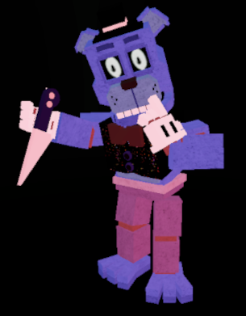

Bear5
Bear5 is coming
Hp:1200
stamina:100
Speed:andar:7/correr:13
Dano 25
Ability's
Stalker/passivo
Quando ele nao esta caçando ninguem ele fica com speed:andar:9/correr;15
Phantom Jumpscare
Da um susto e deixa sua tela zuada
Was That The Bite Of 87?!
Der uma mordida no Player que alem de dar 35 de dano faz que a vitima nao consiga usa as abilidades por 7 segundos
the last connection/Quando falta 1 minutos ou last man standing
o mapa começa a pega fogo que o fogo começa a da 1 de dano/a cada 45 segundos